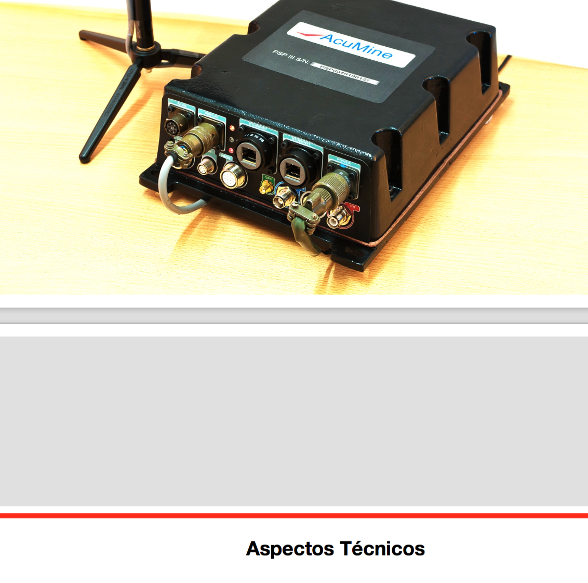
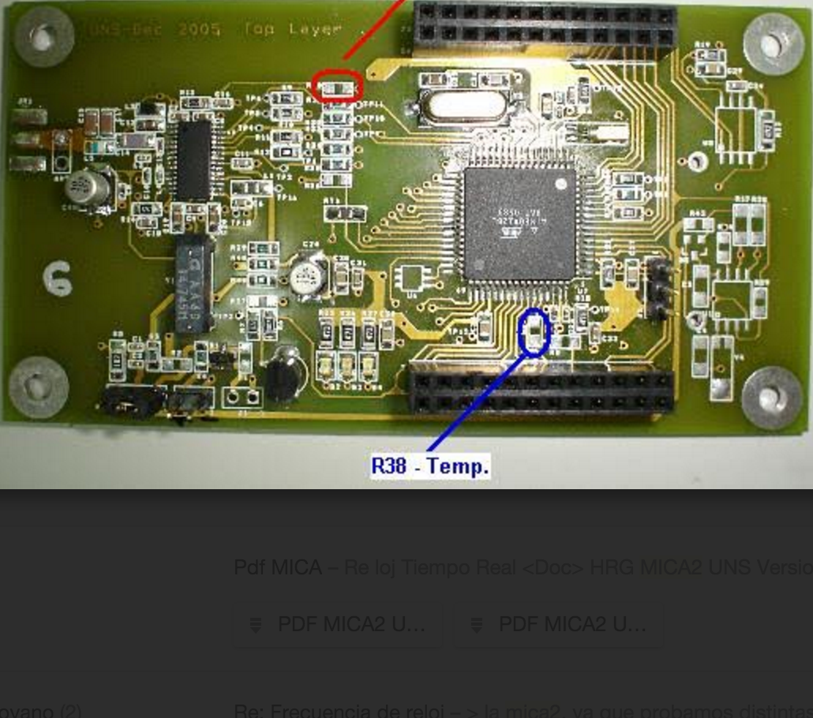

Hardware Projects

4CAST Hardware R&D
- Altium CAD Software
- Military Standards Devices & Connectors
PCB design and testing for the Signal Processing Unit and LCD Display Unit for Acumine's 4CAST, one of the leading collision avoidance safety systems for open pit mines.

MICA2 UNS
- 8-bit Microcontroller & RF Chips Main Systems on Board
PCB Design of general purpose embedded systems sensor network nodes utilized in research projects at the Universidad Nacional del Sur in Argentina. The design was based on the University of Berkley device.

CELAE
- Cellular Network Technology
Dispatch system utilized by firefighter forces in small cities in Argentina to summon firemen on duty using algorithms that allow quick response and instant replacement for unavailable ones.